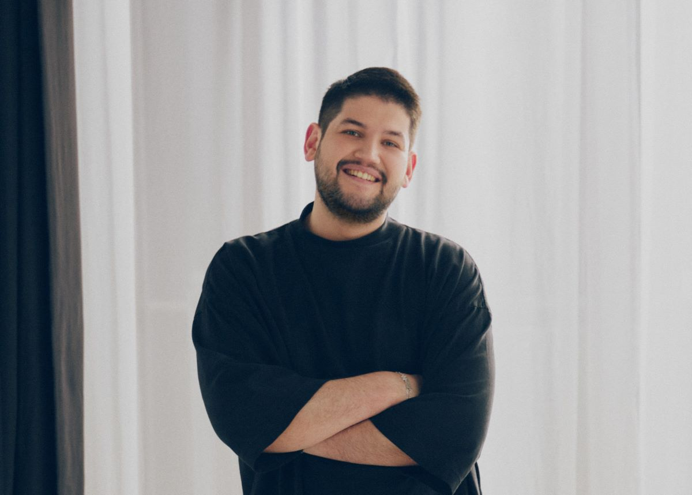

Батырхан Тогайбаев
Как казахстанский сервис по поиску врачей меняет рынок медуслуг и выходит в другие страны
forbes

Стартап AIDENTIS
Казахстанский стартап AIDENTIS внедрит технологии ИИ в клиническую диагностику в стоматологии
digitalbusiness

Роману Линейцеву
Казахстанец запустил мобильную игру и за прошлый год заработал $18 млн. История Grand Mobile

Асылзат Исатаева
«Уже вложили 500 тысяч долларов».Казахстанка придумала
стартап,который помогает лечить зубы
как возникла идея AIDENTIS, сколько средств вложили в платформу и в
чем ее польза для обычного пациента

Динар Бенсеитов и Мирас Турсуналиев
Как стартап QazTracker привлек инвестиции от Тимура Турлова
рассказали о трекерах по диагностике здоровья КРС и о том, насколько
сложно привлечь инвестиции в Agro Tech

Алибек Достияров и Ерсултан Сапар
AI-стартап казахстанцев привлёк $3,6 млн
Экс-консультант McKinsey Алибек Достияров и бывший инженер Apple
Ерсултан Сапар упрощают работу консалтинговых компаний